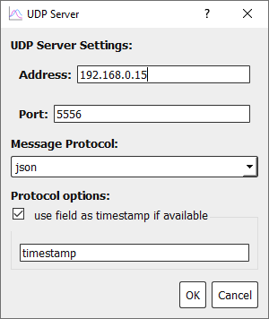

Visualization¶
We recommend using PlotJuggler for most data visualization when using Epically Powerful. PlotJuggler is a popular time-series visualization tool with roboticists, particularly in the ROS community. We include simple client functionality in Epically Powerful allowing you to send data from your controller over the network to a device running PlotJuggler.
Installing PlotJuggler¶
You can (and probably should) install PlotJuggler on a device not running your robot. As long as the computer with PlotJuggler and the Epically Powerful robot are on the same network, things will work just fine. Please follow the instructions on the PlotJuggler GitHub Page to install PlotJuggler. By default, Linux and Windows are supported, however you can build PlotJuggler from the source code for macOS as well. Any specific issues with PlotJuggler itself should be directed to the issues page on their GitHub repository.
Setting up PlotJuggler¶
Epically Powerful utilizes UDP communication to send data to PlotJuggler, so you will need to select that option from the dropdown menu in the “Streaming” tab.

Once you’ve set that, press “Start” and you’ll be greeted with some options.

The Address entered here should either be the local network IP address of your device. You can identify this with the
ipconfigcommand on Windows, and theifconfigorip acommand on Linux.The Port can be whatever number you want (as long as it’s above 1024). The default number here will serve perfectly fine.
The Message Protocol must be JSON.
The timestamp field is optional, however we highly recommend including a timestamp field (any name will serve). This ensures that data is plotted smoothly, and not just stamped with the time it arrived.
Once all options are set, press “OK”.
Note
PlotJuggler can only connect to clients that are on the same local network. Devices cannot connect over the internet, and some Domain networks may not work due to administrative controls.
Setting up Epically Powerful¶
In your code, you can import and use the visualization as described in the snipped below.
from epicallypowerful.toolbox import PlotJugglerUDPClient, TimedLoop
import time
import math
# Please check to make sure this matches the IP address and port in PlotJuggler
pj_streamer = PlotJugglerUDPClient(addr='192.168.0.15', port=5556)
loop = TimedLoop(30) # 30Hz loop
while loop.continue_loop():
# Some other fun roboticsy stuff and code logic ...
# Pull all data to be plotted into a single dict.
data_to_send = {
'example_data': { # You can nest data in a tree-like structure
'sine': math.sin(time.time()),
'cosine': math.cos(time.time())
},
'timestamp': time.time() # Remeber to include a relevant time stamp
}
# Send the data to the PlotJuggler application
pj_streamer.send(data_to_send)
More Information on PlotJuggler¶
More information on how to use PlotJuggler effectively can be found in the PlotJuggler User Guide
Other Options¶
Epically Powerful does not include helper functionality for any other visualization tools. The list below has some nice alternatives if PlotJuggler does not serve your needs.